Como ver os seus turnos, pedir trocas e avisar quando não pode
ir — passo a passo, pelo telemóvel.
RTVAORádio e Televisão Alfa & Ómega
Edição 1Novembro de 2026
Bem-vindo à equipa
O Cue App diz-lhe quando vai servir na equipa de média da RTVAO.
Pelo telemóvel, pode ver a sua escala, pedir uma troca e avisar
quando não pode ir.
Este manual é para os escalados: os voluntários
que servem nos cultos e eventos — câmara, áudio, vídeo,
streaming, iluminação e outras funções. Cada capítulo explica
uma tarefa, com os passos numerados e a tela que vai ver.
1Entrar pela primeira vez
2O ecrã Início: o seu próximo turno
3Ver todos os seus turnos
4Pedir uma troca
5Avisar que não pode ir
6Marcar ausências e pausas
7Mudar os dias em que pode servir
8Escolher os avisos que recebe
9Perguntas frequentes
Como andar na app
Na parte de baixo do ecrã há sempre cinco botões. É por eles que
se anda na app.
Início
O seu próximo turno, com a hora de chegada.
Escala
Todos os seus turnos, mês a mês.
Trocas
Pedir ou aceitar uma troca com um colega.
Ausências
Avisar os dias em que não pode servir, ou fazer uma
pausa.
Perfil
Os seus dados, os dias em que pode servir e os avisos.
Para sair da app, toque em Sair.
O sino
No canto de cima, o sino mostra os seus avisos: escalas novas,
mudanças, pedidos de troca e lembretes.
1
ComeçarEntrar pela primeira vez
Precisa de um cadastro aprovado. Depois disso, entra sempre com
o seu número de telefone e a sua palavra-passe.
Peça a um coordenador o
link de cadastro.
Preencha o formulário e escolha uma palavra-passe
com pelo menos 8 caracteres.
Espere a aprovação. Se for pedida uma correção,
corrija os dados e reenvie o cadastro.
Abra a app e escreva o seu
número de telefone, sem o +258.
Escreva a sua palavra-passe e toque
em Entrar.
Deixe marcado
Manter sessão iniciada neste dispositivo
para não ter de entrar todas as vezes.
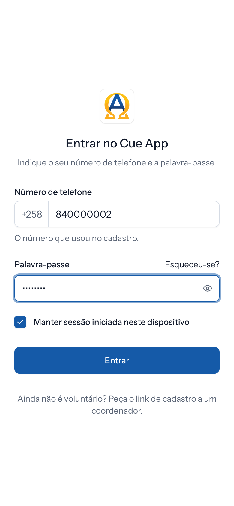
Ecrã de entrada
Esqueceu a palavra-passe?
Toque em Esqueceu-se?. Se não tem e-mail, peça
ao coordenador um link novo. O link só funciona uma vez.
Instalar a app no telemóvel
Com a app instalada, abre como as outras apps e recebe os avisos
mesmo fechada.
Android
Abra o site no Chrome, toque nos três pontos e escolha
Adicionar ao ecrã principal.
iPhone
Abra o site no Safari, toque em
Partilhar e escolha
Adicionar ao ecrã principal.
Depois, em Perfil → Notificações, permita os
avisos neste dispositivo.
2
O dia a diaO ecrã Início: o seu
próximo turno
Ao entrar, o cartão azul mostra o seu próximo turno. O mais
importante é a hora de chegada, em números
grandes: é a hora a que deve estar no local para montar o
equipamento.
Daqui a 2 dias
Quanto falta, e a data.
Chegada às 07:30
A hora a que deve chegar.
Culto de Domingo
O nome do evento.
Função
O que vai fazer, por exemplo Áudio.
Horário
Quando o evento começa e acaba.
Local
Onde é o evento.
Com quem vai servir
Os colegas escalados consigo, por função.
No fim do cartão há dois botões:
Pedir troca (capítulo 4) e
Não posso ir (capítulo 5).
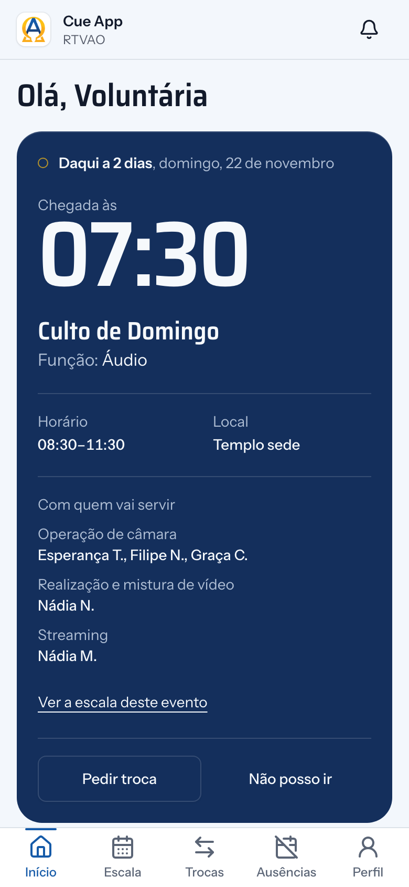
O cartão do próximo turno
No dia do turno
A luz dourada ao lado da data acende-se no dia em que serve.
Abaixo do cartão há atalhos para marcar ausências, mudar os seus
dias e fazer uma pausa.
3
O dia a diaVer todos os seus
turnos
Toque em Escala, em baixo. Aparecem todos os
seus turnos, organizados por mês. Cada linha mostra o dia, o
evento, a sua função e a hora de chegada.
Toque num turno para o abrir.
Veja o horário e o local.
Toque em
Ver a equipa deste evento para ver
todos os escalados.
Se precisar, use
Pedir troca ou
Não posso ir.
Toque outra vez no turno para o fechar.
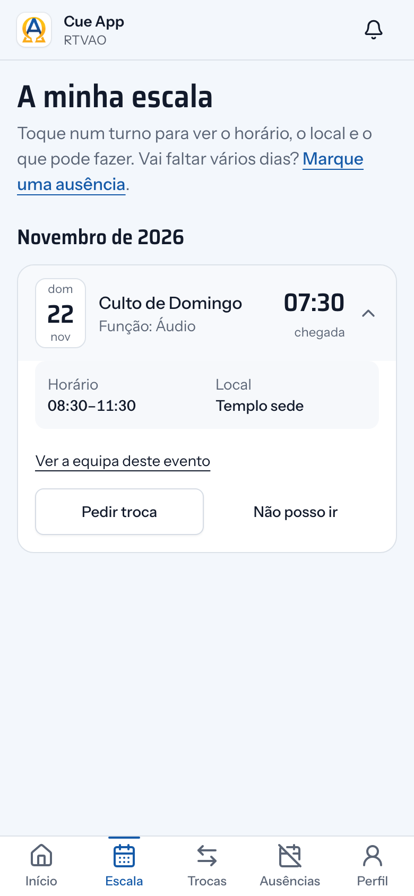
A minha escala, com um turno aberto
4
ImprevistosPedir uma troca
Use Pedir troca quando não pode ir e quer que
um colega fique com o seu turno.
Abra o turno, no Início ou em Escala, e toque em
Pedir troca.
Escolha quem pode assumir:
Qualquer colega disponível
— o pedido vai para todos os que podem fazer
essa função nesse dia.
Um colega da lista — o
pedido vai só para essa pessoa.
Toque em Enviar pedido.
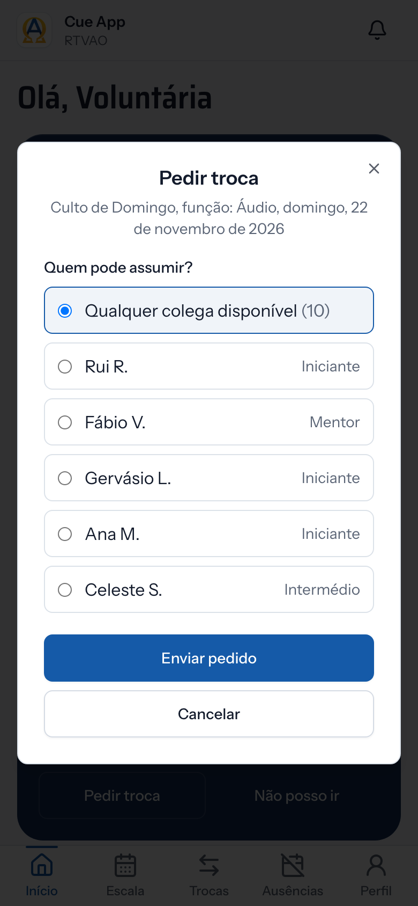
Escolher quem pode assumir
Importante
O turno continua seu até um colega aceitar e o coordenador
aprovar. Até lá, conte que vai servir.
Só aparecem colegas que sabem fazer a função e estão livres
nesse dia. Se ninguém puder, o pedido fica aberto e os
coordenadores são avisados. Para acompanhar ou cancelar o
pedido, vá a Trocas → Os meus pedidos.
Ficar com o turno de um colega
Quando um colega precisa de substituto num turno que
pode fazer, recebe um aviso.
Toque em Trocas, em baixo.
Em
Colegas que precisam de substituto,
toque no turno.
Confirme em
Assumir este turno.
O coordenador aprova a troca e recebe a resposta por
aviso.
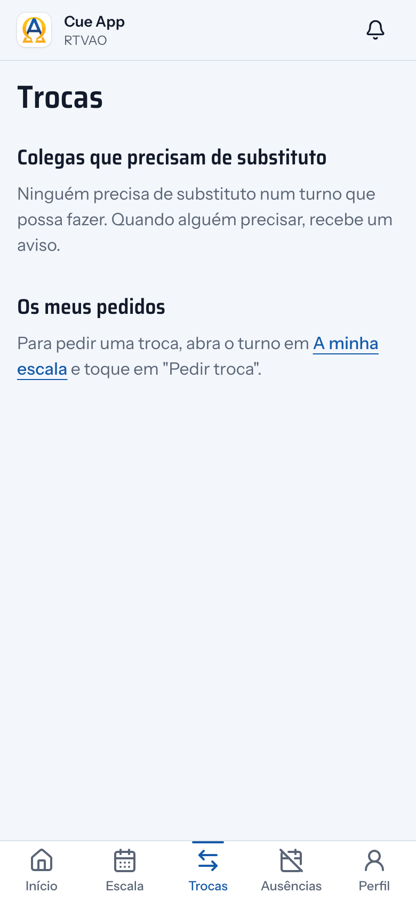
A página Trocas
5
ImprevistosAvisar que não pode
ir
Use Não posso ir quando surge um imprevisto e
não tem quem o substitua. Avise o mais cedo possível.
Abra o turno e toque em
Não posso ir.
Leia a mensagem.
Toque no botão vermelho
Não posso ir para
confirmar.
Os coordenadores são avisados e o turno é oferecido aos
colegas que podem assumir.
Mudou de ideias? Toque em Cancelar e o
turno continua seu.
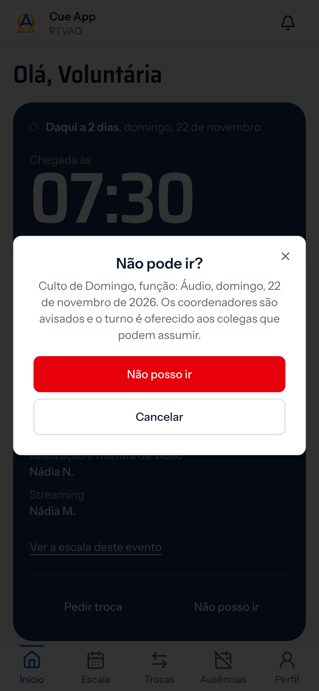
Confirmar que não pode ir
Três dias antes
Antes de cada turno, a app pergunta se ainda pode ir. Responda,
para a equipa poder planear.
6
PlanearMarcar ausências e pausas
Se sabe com antecedência que não pode servir, marque a ausência.
Assim não é escalado nesses dias.
Um só dia
Toque em Ausências, em baixo.
Em Bloquear datas, deixe
Um dia escolhido.
Toque num dos seus próximos turnos, ou escolha o dia
no calendário.
Se quiser, escreva o motivo. Só os coordenadores o
veem.
Toque em Bloquear este dia.
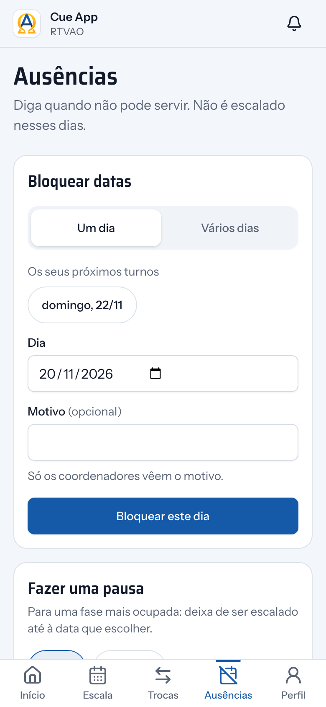
Bloquear um dia
Vários dias seguidos
Para férias ou uma viagem.
Em Bloquear datas, toque em
Vários dias.
Escolha o primeiro dia em De e o
último em Até.
Toque em
Bloquear estes dias.
Se já tinha turnos nesses dias, os coordenadores
procuram um substituto. As datas marcadas aparecem em
Datas bloqueadas, no fim da página, e
pode apagá-las aí.
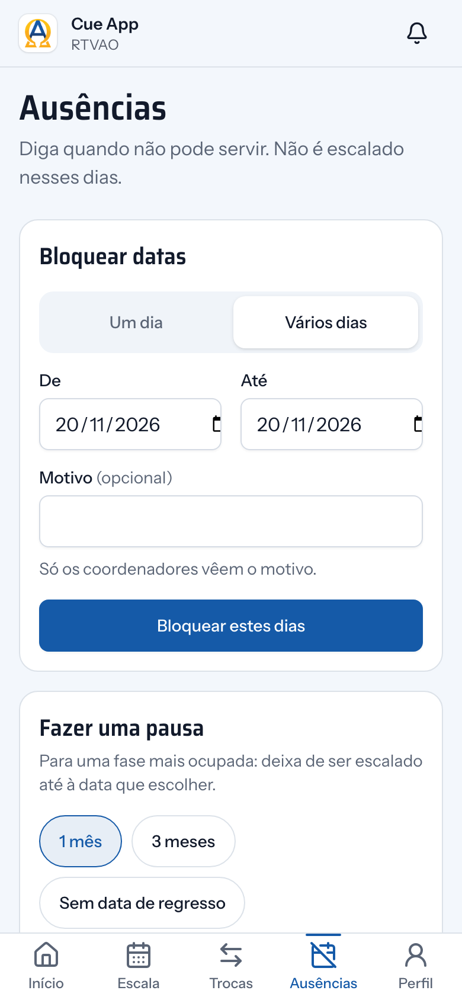
Bloquear vários dias
Fazer uma pausa
Para uma fase mais ocupada: deixa de ser escalado até à
data que escolher.
Em Fazer uma pausa, escolha
1 mês, 3 meses ou
Sem data de regresso.
Toque em Fazer pausa e
confirme.
Para voltar antes do tempo, toque em
Voltar a participar.
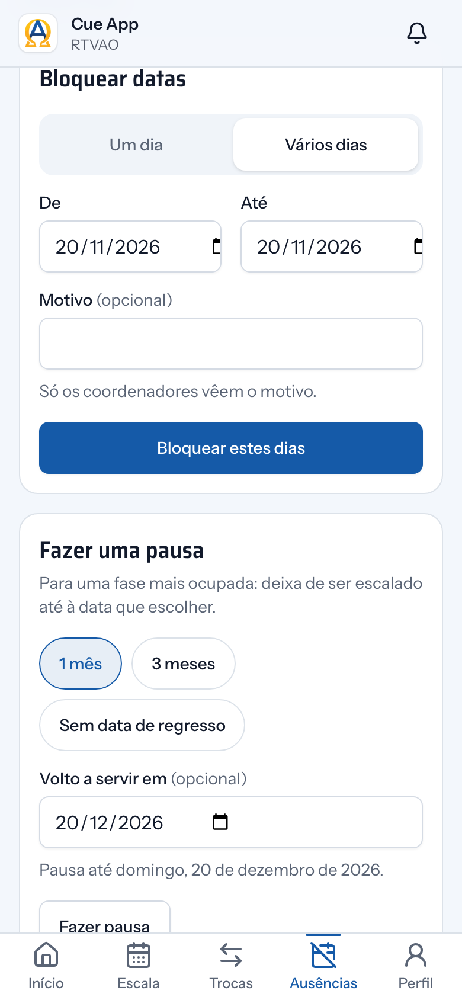
Fazer uma pausa
7
PlanearMudar os dias em que pode
servir
Os seus dias habituais ajudam o coordenador a fazer escalas
justas. Mantenha-os atualizados.
Toque em Perfil e depois em
Os meus dados.
Desça até Disponibilidade.
Toque nos dias e períodos em que pode servir. Os
escolhidos ficam azuis.
Escolha com que frequência pode servir, por exemplo
2 a 3 vezes por mês.
Desça até ao fim e toque em
Guardar.
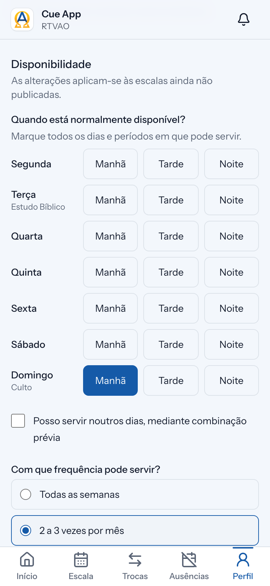
Dias e períodos disponíveis
As mudanças só contam para as escalas ainda não publicadas. Os
turnos já marcados não mudam.
Eventos especiais
Para eventos fora da rotina semanal, pode ser escalado noutros
dias. Se não puder ir, marque uma ausência (capítulo 6).
8
PlanearEscolher os avisos que
recebe
A app avisa quando sai uma escala, quando um turno muda e na
véspera de cada turno.
Toque em Perfil e depois em
Notificações.
Deixe marcados os avisos que quer receber.
Toque em Guardar.
Escala publicada
Saiu uma escala com turnos seus.
Confirmação
Três dias antes, para dizer se ainda pode ir.
Lembrete
Na véspera, com a hora de chegada.
Pedidos de troca
Um colega procura substituto.
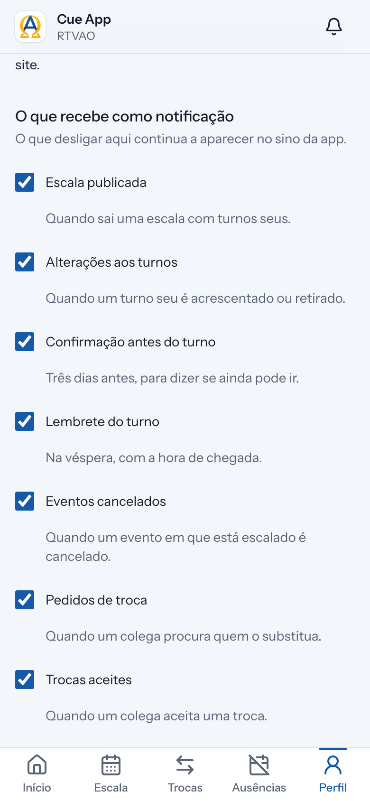
Escolher os avisos
Recomendamos deixar tudo marcado. O que desligar continua a
aparecer no sino da app.
9
AjudaPerguntas frequentes
Não consigo entrar.
Confirme o número, sem +258, e a palavra-passe. Toque no
ícone do olho para ver o que escreveu. Se não resultar,
toque em Esqueceu-se? ou fale com um
coordenador.
O meu cadastro ainda não foi aprovado.
Espere pela aprovação. Se for pedida uma correção, corrija
os dados e reenvie o cadastro.
Não vejo nenhum turno.
A escala ainda não foi publicada, ou não foi escalado nesse
período. Quando sair, recebe um aviso.
Pedi troca. Já posso faltar?
Não. O turno continua seu até um colega aceitar e o
coordenador aprovar.
Vou viajar duas semanas.
Marque uma ausência de
Vários dias (capítulo 6).
Fui escalado num dia que não escolhi.
Pode acontecer em eventos especiais. Se não puder ir, use
Pedir troca ou
Não posso ir.
Não recebo avisos no telemóvel.
Instale a app (capítulo 1) e permita as notificações em
Perfil → Notificações. Confirme que os
avisos não estão bloqueados no navegador.
Obrigado por servir.
Ainda tem dúvidas? Fale com um coordenador da equipa de média.
Cue App · Equipa de média da RTVAO Rádio e Televisão Alfa
& Ómega — IEAD, Ministério Alfa & Ómega